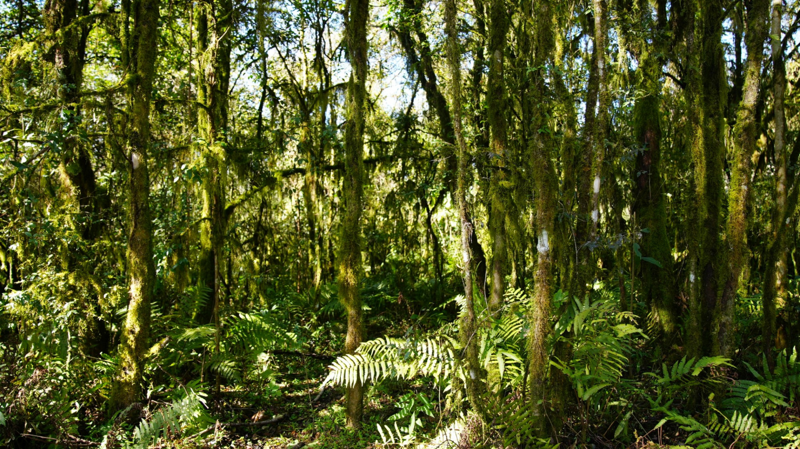
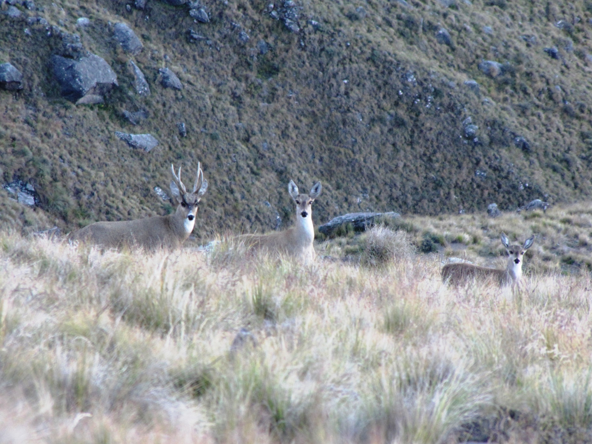
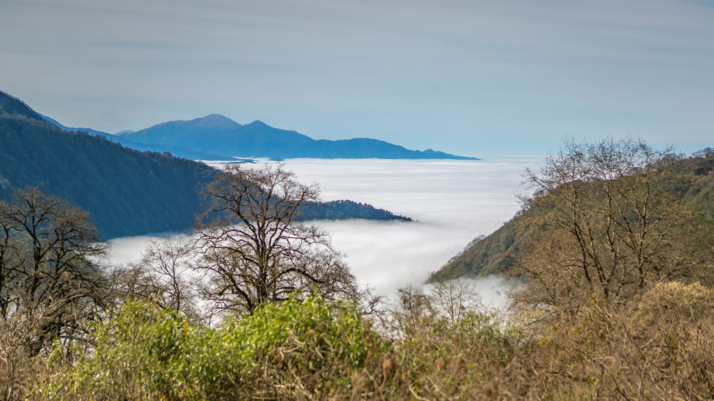
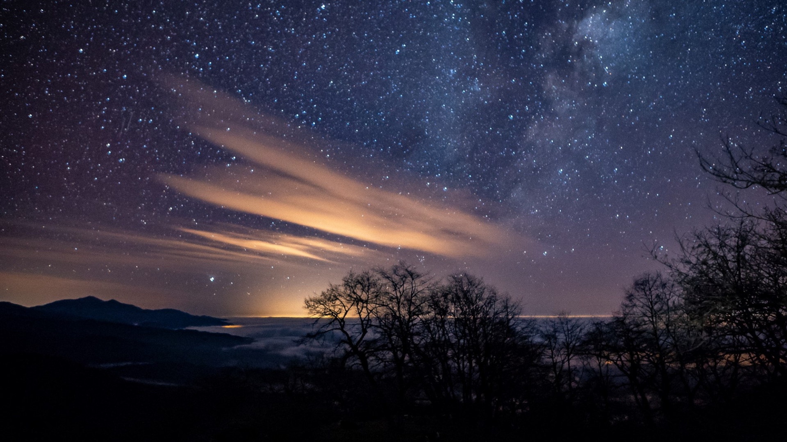
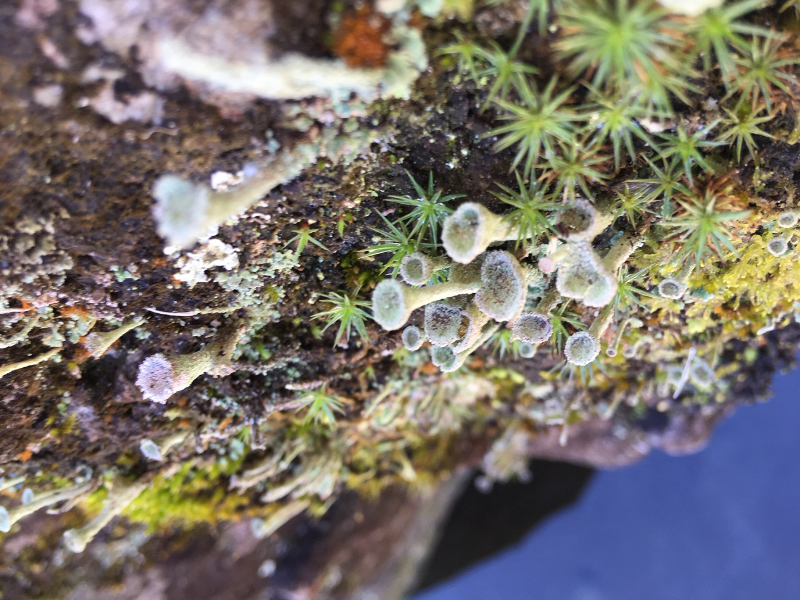
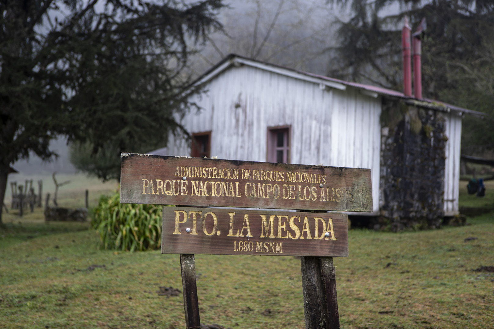

Características ambientales
El Parque Nacional, ubicado en Tucumán, protege muestras de dos ecorregiones: el relicto de Yungas más austral de nuestro país y, en sus partes más altas, los Altos Andes.
El área protegida se integra con el anterior Parque Nacional Campo de los Alisos, creado en 1995, y territorios aledaños al mismo. Protege las nacientes de los ríos Jaya y las Pavas, que recorren el este de las sierras del Aconquija y desembocan en los valles y campos de cultivo tucumanos.
La temperatura media del verano ronda los 28° C en la zona baja y los 0° C en La Ciudacita (4.200 m sobre el nivel del mar), y la del invierno desciende a 16° C en el piedemonte y a -10 ° C cerca de las cumbres; hasta 2.500 mm anuales de lluvia en los faldeos inferiores, concentrados en la época estival, y copiosas nevadas en las alturas.
Flora
Si bien la flora selvática es pródiga en especies arbóreas, merece destacarse la presencia del aliso del cerro (Alnus acuminata), que justamente da nombre al portal Campo de los Alisos. Si bien también crece en la selva, esta especie es característica del Bosque Montano entre los 1.500 y 2.000 metros sobre el nivel del mar, donde forma asociaciones casi puras. Se la considera una especie muy útil para fijar y proteger suelos degradados debido a su rápido crecimiento y capacidad para fijar el nitrógeno atmosférico.
Fauna
Hasta el momento se han registrado más de 400 especies de vertebrados, entre las que destacan guanacos, lobitos de río, el gato andino, la ranita montana y el ocelote. Además, en sus pastizales de altura puede encontrarse la taruca (Hippocamelus antisensis), cérvido declarado Monumento Natural Nacional.





